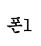
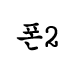
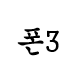

스마트폰은 컴퓨터를 결합한 무선 휴대전화기이다. PC에서 실행되는 운영체제보다 작게 만든 모바일 운영체제를 탑제하여 인터넷검색, 전자우편, 간단한 문서 편집, 카메라, 오디오 및 비디오 재생 등 PC의 기능을 거의 모두 갖추고있다.
최초의 스마트폰은 사이먼(symon)으로 추청된다. ~~의 라스베이거스에서 열린 컴댁스에서 컨셉 제품으로~~
안드로이드(영어: Android)는 휴대전화를 비롯한 ~~ 인터페이스 그리고 표준응용 프로그램 (웹브라우저,~~ 미디어 메세지 서비스(MMS)등을 포함하고있는~~
아이폰(영어:iphone)은 2007년 1월 9일,애플이 발표한 휴대전화 시리즈이다. 미국 샌프란시스코에서 열린 맥월드 2007에서 애플의 창업자중 한명인 스티븐 잡스가 발표했다.
|  |  |  |
Copyright 2025 by 이태연